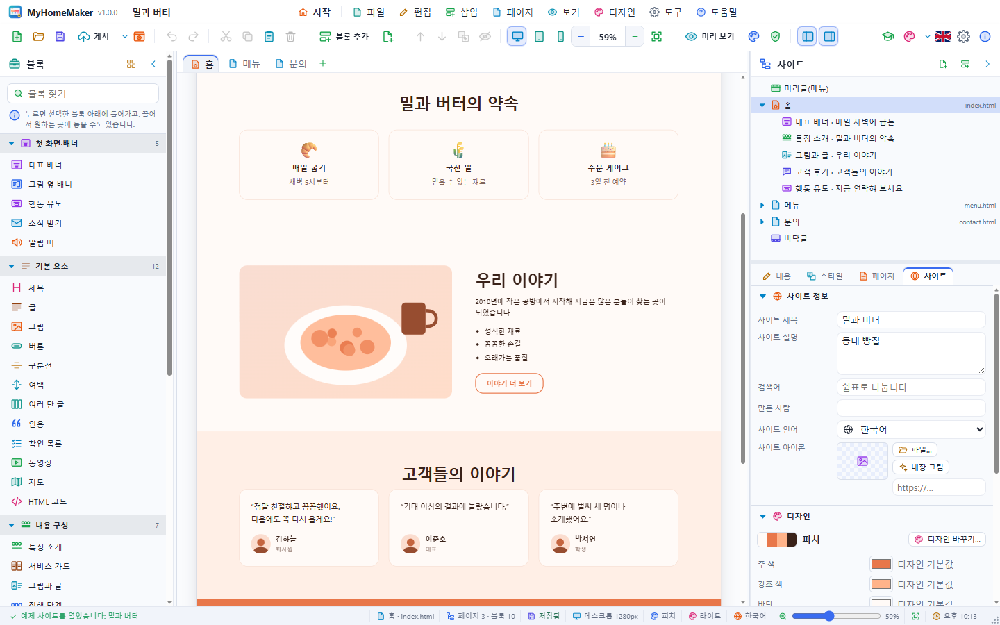

MyHomeMaker 튜토리얼 — 첫 홈페이지 만들기
이 튜토리얼은 동네 카페 "오늘의 커피" 홈페이지를 처음부터 만들어 게시하는 과정을 따라 합니다. 30분쯤 걸립니다. 각 단계의 메뉴·단추 이름은 앱에 보이는 그대로입니다. 기능 전체는 사용 설명서에 있습니다.
앱 안의 튜토리얼(도움말 › 튜토리얼, F11)은 같은 내용을 실제 화면을 움직이며 보여 줍니다. 이 문서는 직접 손으로 해 보는 실습서입니다.
1. 새 사이트 만들기
- MyHomeMaker 를 실행하면 시작 화면이 나옵니다.
- 툴바의 새 사이트… 단추(또는 파일 › 새 사이트…, Ctrl+N)를 누릅니다.
- 왼쪽에서 템플릿을, 카드에서 카페를 고릅니다.
- 아래 사이트 이름 칸에
오늘의 커피라고 쓰고 만들기를 누릅니다.

카페 템플릿에는 그림 옆 배너, 메뉴판, 사진첩, 문의 블록이 든 페이지 하나가 있습니다. 머리글에는 사이트 이름이 들어가 있습니다.
2. 화면 둘러보기

- 왼쪽 블록 패널: 넣을 수 있는 블록들
- 가운데 페이지 탭과 캔버스: 실제 사이트 모습
- 오른쪽 사이트 패널: 위는 머리글·페이지·블록·바닥글 목록, 아래는 내용 · 스타일 · 페이지 · 사이트 편집기
툴바의 너비에 맞추기(Ctrl+Shift+W)를 누르면 페이지 전체 폭이 캔버스에 맞게 보입니다.
3. 대표 문구 고치기
- 캔버스 맨 위의 배너(그림 옆 배너)를 한 번 누릅니다. 파란 테두리와 이름표가 생깁니다.
- 큰 제목 글자를 한 번 더 누르면 글자가 선택되고 바로 고칠 수 있습니다.
향긋한 커피 한 잔으로 시작하는 하루라고 쓰고 Enter 를 누릅니다.

작은 제목·설명·버튼 글자도 같은 방법으로 고칩니다. 오른쪽 내용 탭에서도 같은 칸을 고칠 수 있습니다. 잘못 고쳤으면 Ctrl+Z 로 되돌립니다.
4. 그림 바꾸기
- 배너의 그림을 두 번 누르면 파일 고르기 창이 열립니다. 카페 사진을 고르세요.
- 사진이 없으면 오른쪽 내용 탭의 그림 칸에서 내장 그림 › 카페를 고릅니다.
큰 사진은 긴 변이 1920px 이 되도록 저절로 줄여서 넣습니다. 그림 파일을 선택한 블록 위로 끌어 놓아도 됩니다.
5. 메뉴판 고치기
- 메뉴판 블록을 누릅니다.
- 오른쪽 내용 탭 아래의 메뉴 목록에서 항목마다 이름·설명·가격을 고칩니다.
- 추가를 눌러
바닐라 라테 · 달콤한 바닐라 향 · 5,500을 넣습니다. - 항목의 ↑ ↓ 단추로 순서를 바꾸고, 휴지통으로 지웁니다.

6. 블록 넣고 옮기기
- 왼쪽 블록 패널의 내용 구성 › 특징 소개를 캔버스의 메뉴판 위로 끌어다 놓습니다. 파란 선이 놓일 자리를 보여 줍니다.
- 특징 세 개를
직접 볶은 원두,매일 굽는 빵,조용한 2층 자리로 고칩니다. 아이콘 칸에는 이모지(☕ 🥐 🪑)를 쓸 수 있습니다. - 소개·전시 › 고객 후기를 눌러 넣습니다(선택한 블록 바로 아래에 들어갑니다).
- 블록의 이름표를 끌어 원하는 자리로 옮기거나, 툴바의 위로 이동 · 아래로 이동(Ctrl+↑/↓)을 씁니다.

7. 블록 꾸미기
- 고객 후기 블록을 고르고 오른쪽 스타일 탭을 엽니다.
- 배경을 옅은 바탕으로, 위 여백과 아래 여백을 96px 로 바꿉니다.
- 정렬을 가운데로 둡니다.

8. 페이지 추가하기
- 탭 줄 끝의 +(또는 페이지 › 페이지 추가…)를 누릅니다.
- 이름에
오시는 길, 시작 내용에 문의를 고르고 확인을 누릅니다. - 새 페이지의 문의·연락처 블록에서 주소·전화·운영 시간을 고치고, 지도 장소 칸에 카페 주소를 씁니다.
- 머리글 메뉴에
오시는 길이 저절로 생긴 것을 확인합니다.

페이지 탭에서 파일 이름(visit → visit.html), 브라우저 제목, 검색용 설명을 정할 수 있습니다.
9. 디자인 바꾸기
- 디자인 › 디자인 바꾸기…(Ctrl+Shift+D)를 엽니다.
- 밝은 디자인에서 우드나 피치를 두 번 눌러 바로 적용합니다.
- 마음에 들 때까지 다른 디자인도 눌러 봅니다. 내용은 그대로이고 색과 글꼴만 바뀝니다.
- 더 다듬으려면 편집기의 사이트 탭에서 주 색이나 제목 글꼴을 바꿉니다.

10. 휴대폰에서 확인하기
- 툴바의 휴대폰 단추를 누릅니다. 캔버스가 390px 너비가 되고 메뉴가 ☰ 로 접힙니다.
- 휴대폰에서 필요 없는 블록은 스타일 › 휴대폰에서 숨기기를 켭니다.
- 데스크톱 단추로 돌아옵니다.

11. 미리 보기
- 미리 보기(Ctrl+E)를 누르면 편집 표시 없이 방문자 화면이 됩니다. 메뉴의
오시는 길을 눌러 페이지가 바뀌는지 봅니다. Esc 로 돌아옵니다. - 브라우저에서 미리 보기(F5)는 사이트를 시스템 브라우저로 엽니다.

12. 사이트 정보와 저장
- 블록 선택을 풀고(Esc) 사이트 탭에서 사이트 설명에
동네 카페 오늘의 커피 — 직접 볶은 원두와 매일 굽는 빵을 씁니다. - 저장(Ctrl+S)을 눌러
오늘의 커피.myhome으로 저장합니다. 그림까지 이 파일 하나에 들어갑니다.

13. 점검하고 게시하기
- 도구 › 사이트 점검으로 고칠 점이 없는지 봅니다.
- 툴바의 게시(Ctrl+Shift+P)를 누릅니다.
- 폴더(데스크톱) 또는 ZIP 파일을 고르고, 그림을 파일로 빼기를 켠 채 게시를 누릅니다.
- 폴더로 게시했다면 브라우저로 보기를 눌러 결과를 확인합니다.

게시한 폴더에는 index.html, visit.html, style.css, assets/ 가 있습니다.
14. 인터넷에 올리기
- GitHub Pages: 저장소를 만들고 게시한 파일을 올린 뒤 Settings › Pages 에서 켭니다.
- Netlify: app.netlify.com 의 Sites 에 폴더나 ZIP 을 끌어다 놓습니다.
- 웹 호스팅: FTP 로 웹 루트(
public_html등)에 올립니다.
문의 양식이 메일로 오게 하려면 Formspree 같은 양식 서비스에서 주소를 받아 문의·연락처 블록의 양식 보낼 주소에 넣고 다시 게시합니다.
다음 단계
- 파일 › 예제 사이트 열기의 예제 16가지를 열어 블록 구성을 살펴보세요.

- 자주 쓰는 구성은 파일 › 템플릿으로 저장…으로 템플릿(.mhomt)을 만들어 두세요.
- 단축키는 도움말 › 단축키 목록…에 있습니다.